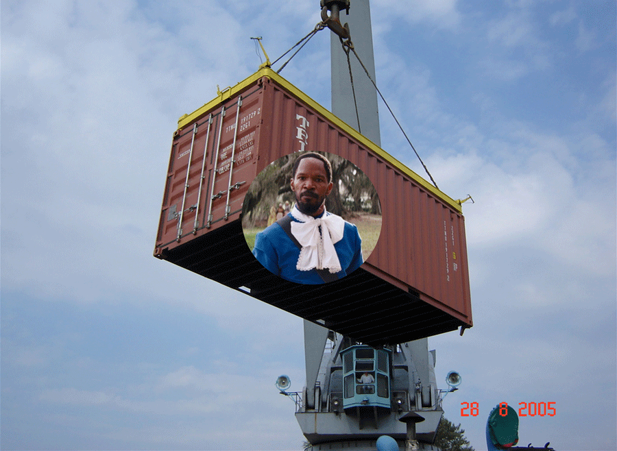
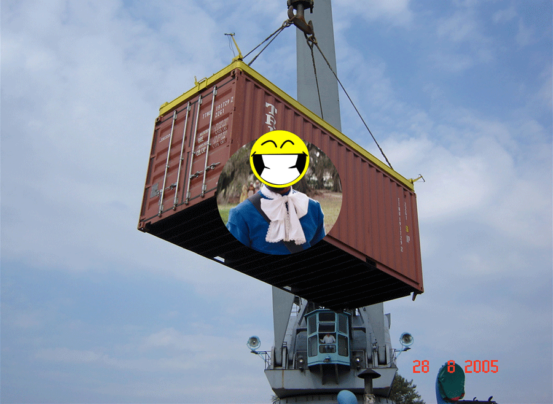

Dockerize that Django app!
But... what is Docker?
Docker helps you test and deploy your apps in isolated environments.
Each app is sandboxed within its a "Docker Container".
A Container is...
- Based on a Docker Image: base Linux OS, modified base, base with additional tools e.g. Postgresql
- Uses LXC and AuFS
- Behaves like a real dedicated OS
- Used to isolate apps, databases, messaging queues, ...
Docker Containers vs VMs

Why is Docker Awesome?
- True App isolation
- SMALL footprint!
- Great flexibility
- Supports multiple linux OSs
- DB and other toolsets can abstracted out
- Provisioning tools
- Amazing PaaS possibilities
Let's Dockerize that Django app!
Let's Dockerize that Django app!
Now let's create a container
Step 1.
We need a base image!
You can use a base OS one:
- Ubuntu
- CentOS
- Debian
- ...
You can use a modified base e.g.:
- Ubuntu 14.04 base with PostgreSQL 9
- CentOS base with RabbitMQ
- Debian with MongoDB
- ...
Docker Hub
Grab your repos!
Step 2.
Fire the image up in a container
Example Dockerfile
FROM ubuntu
MAINTAINER You! "you@email.com"
ADD . /home/docker/app
RUN apt-get -qq update
RUN apt-get install -y python-dev python-setuptools supervisor git-core
RUN easy_install pip
RUN pip install -r /home/docker/app/requirements.txt
RUN (cd /home/docker/app/ && python manage.py syncdb --noinput)
RUN (cd /home/docker/app/ && python manage.py collectstatic --noinput)
EXPOSE 8000
CMD ["python", "manage.py", "runserver", "0.0.0.0:8000"]